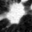
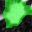
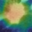

MICCAI Educational Challenge 2026 · From Pixels to Patients
A hands-on tour of seven attribution methods, implemented from scratch and measured on real lung‑CT. Hover the layers, step through the computation, and see — quantitatively — where each heat‑map actually lands.



One lung‑CT patch — the scan above — is the running example for this entire piece, from the Medical Segmentation Decathlon (Task06_Lung), reframed as a tumour‑present‑vs‑not classifier. Watch it flow through the network — the real activation maps at every layer. Hover any layer to enlarge it and unfold its channels.
Real activations for case lung_038 · turbo-coloured, contrast-stretched per channel · hover a layer to expand its top channels.
From the plain class-agnostic baseline to path-integrated feature attribution — each with its intuition, the real code, and its failure modes.
Medical Segmentation Decathlon Task06_Lung tumour CT — reframed as a patch classifier: tumour-present vs. not.
Every method is real, readable code — not a black box. The non-obvious gotchas that make it work are called out.
Checkpoint, data cache and uv.lock are hashed into every bundle. No hand-drawn figures.